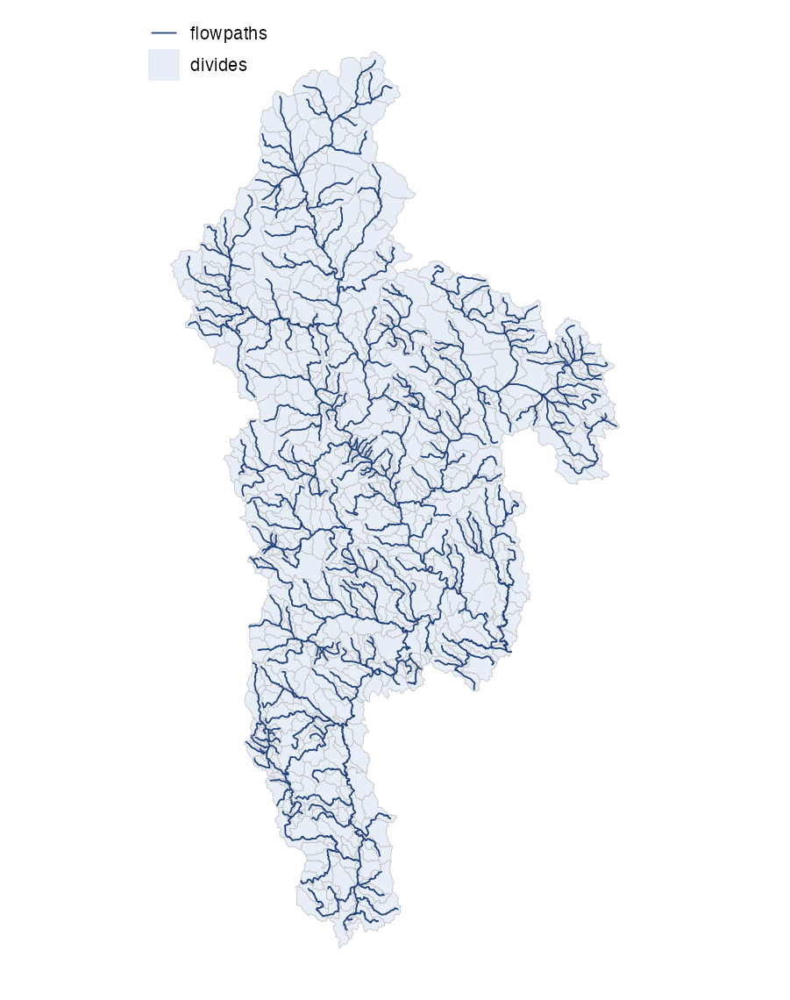

aggregate_fabric() coalesces the reconciled fabric to
distribution scale: merging small flowpaths and divides
toward the target modeling size while conserving total drainage area. It
reads the refactor output from disk and needs no raster access.
Inputs and outputs
Input: fabric_dir, the vpu working
directory holding the refactor output (reconciled.gpkg,
rec_div.gpkg, pois.gpkg, …).
Output:
{out_dir}/vpu_{vpuid}/work/out_vpu{id}.gpkg with layers
flowpaths (aggregated), divides,
network (the aspatial topology table), pois,
small_segments, and landscape_divides where a
domain has any. The flowlines and events
layers are added to the same file later, by the nextgen phase.

What it does
-
Aggregate the network
(
aggregate_network()): merge flowpaths below the distribution thresholds along level paths, then rebuildtoidtopology. -
Construct aggregated divides
(
construct_agg_divides()): dissolve the member divides for each aggregated flowpath, repairing geometry while conserving area. -
Carry lineage (
member_comid) forward so the tracked-feature invariant still resolves to the source reference ids.
Running it
Standalone (e.g. re-aggregating an existing refactored fabric):
library(hydrofabric)
aggregate_fabric(
vpuid = "01",
fabric_dir = "out/vpu_01", # dir with refactor output
out_dir = "out",
min_area_sqkm = 5 # override a default
)Or as part of the pipeline, resuming from a refactored fabric:
run_pipeline(vpuid = "01", reference_gpkg = "reference.gpkg",
fdr_path = "fdr.vrt", fac_path = "fac.vrt",
out_dir = "out", from = "aggregate", through = "aggregate")Parameters
| Parameter | Default | Controls |
|---|---|---|
ideal_size_sqkm |
10 | target divide area the collapse aims for (km^2) |
max_area_sqkm |
15 | largest divide area a collapse may produce (km^2) |
min_area_sqkm |
3 | divide area below which a unit is collapsed (km^2) |
min_length_km |
0.25 | aggregate-to-distribution flowpath length threshold (km) |
min_fragment_m |
5 | sub-threshold flowpath collapse length (m) |
threshold_m2 |
1000 | fill-small-holes area threshold on divides (m^2) |
snap_interval |
1e-8 | mapshaper snap interval (degrees) |
gap_fill_area |
0 | clean-layer gap-fill area |
overlap_rule |
“max-area” | divide overlap resolution rule |
Validation
Records check_invariants("aggregated", ...): id
uniqueness, divide-area conservation against the refactor total,
non-overlapping divides, and at most one divide per flowpath.
Next
The nextgen phase builds the final product. See the nextgen vignette.